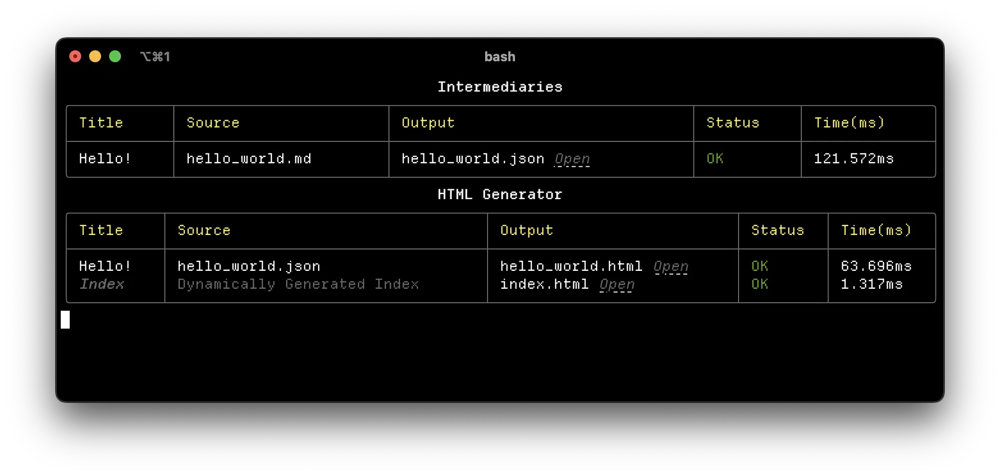

Hello!
Woah, it's a blog!
yeah! i used to have a blog on here ages ago, but, I stopped writing on it. a few things caused that to be the case:
- Breakages against the upstream version of the tool I used (Hugo)
- Usage of Cohost and Tumblr being easily accessible blogging platforms.
- Not loving everythign I had written there
The last point is still relevant, and those posts won't be coming back here :)
However - the second point is less relevant now. Cohost no longer exists 💔, and, I don't particularly want to use software or a platform owned by Matt Mullenwegg 1 2 3.
My first thought was to go back to Hugo - I absolutely know I was using it wrong (with a wacky build script that I ran locally, that then git push --force'd itself onto a second GitHub repo) - but, I figured I should go the rite of passage, and just built my own static site generator.
So! That's what this is running on. It's a dotnet tool, with the bulk of the work done by the amazing library Markdig4 to parse Markdown, and good ol' HTML Agility Pack 5 to handle templating.
Combined with a script called by entr6` and VS Code's Live preview plugin, I have a pretty neat "write markdown on the left, see live preview update on the right".
How do I handle markdown & code-formatting?
Markdig is excellent, and, so are it's plugins for code highlighting. I'm using Markdown.ColorCode 7, which has been painless - apart from one quirk in how the CSS mode handles recognised languages, vs. raw codeblocks. For context, I'm using Markdown.ColorCode in css mode, so I can setup styling in individual CSS files.
My main issue is I was struggling to find a way to target all codeblocks by my CSS - and not just by language.
This is a default code block - it's not targettable with a generic class
// However, this will instead be easily targettable with <div class="csharp">
The workaround is the wonderful, fairly new :has CSS selector - specifically, using the following rule:
/* languages are because languages are <div class="language-name"> /* if not recognised, it defaults back to <pre><code> */ pre:has(code), .csharp, .python, .css { foo: bar; }
This block is using the ```generic language workaround.
It's... fine, although I wish it was slightly nicer.
I need to have a deeper dig into how Markdig works, and if there's either something else I can use - or, how hard it is for me to roll my own solution here.
What's the writing experience like?
Pretty pleasant! Majortiy of the time, you're writing markdown - so all the good and bad that comes with that. For the actual preview of how it looks on a site - entr is invoking a build script whenever I save a file.
For metadata - I'm using a method I don't love, but, it does work. Theoretically, I parse "tags", but I currently don't put these anywhere - that's a later problem 😄. When there's an issue with metadata, I also flag this up in the CLI output, so I can easily spot this.
As for the CLI output - I have these nice tables, thanks to Spectre.Console 8.

Spectre is a great Rich-inspired dotnet library for console output, and I can't recommend it enough. I only really needed to provide a few helpers around it:
DefaultTablefor use between both steps to ensure consistent stylingDefaultTableReportwhich adds a row, and callsctx.RefreshFormatPathWithOpen- this presents a path, with a clickable Open button next to it, which opens the file in the associated application
var table = TUIHelpers.DefaultTable("HTML Generator"); await AnsiConsole.Live(table) .Overflow(VerticalOverflow.Visible) .Cropping(VerticalOverflowCropping.Top) .StartAsync(async ctx => { /* some generation stuff here */ TUIHelpers.DefaultTableReport( table, ctx, "post name", "post path", TUIHelpers.FormatPathWithOpen("output path"), "[green]OK[/]", profiler.GetMs() ); });
The Open button is very handy for opening up pages, and I'm going to take advantage of this for so many future projects 😆.
For future work on this - I'd love for this to be just something I can wrap in a using block - e.g:
using (var table = new DefaultTable("HTML Generator")) { table.Report("post name", "post path", /* etc etc */); }
This should be doable with a bit of massaging - I just need to have a little think about how I want to do this 😅, and it's not really a priority.
What else will go here?
Interesting things! At least, that's the hope. I'm currently about to start doing PROCJAM 2024, and I should have something interesting here once that's done. Apart from that, I want to port Unity to SVG out of Cohost land - because I think it's a cool demo, and I fear it's going to die once Cohost starts redirecting to archival.
References
- Tumblr CEO publicly spars with trans user over account ban, revealing private account names in the process, Amanda Silberling, 22-02-2024
- Employees Describe an Environment of Paranoia and Fear Inside Automattic Over WordPress Chaos, Samantha Cole, 17-10-2024
- Automattic demanded a cut of WP Engine’s revenue before starting WordPress battle, Emma Roth, 02-10-2024
- Markdig, Alexandre Mutel
- HTML Agility Pack, ZZZ Projects
- Entr, Eric Radman
- Markdown.ColorCode, Will Baldoumas
- Spectre.Console, Patrik Svensson, Phil Scott, Nils Andresen